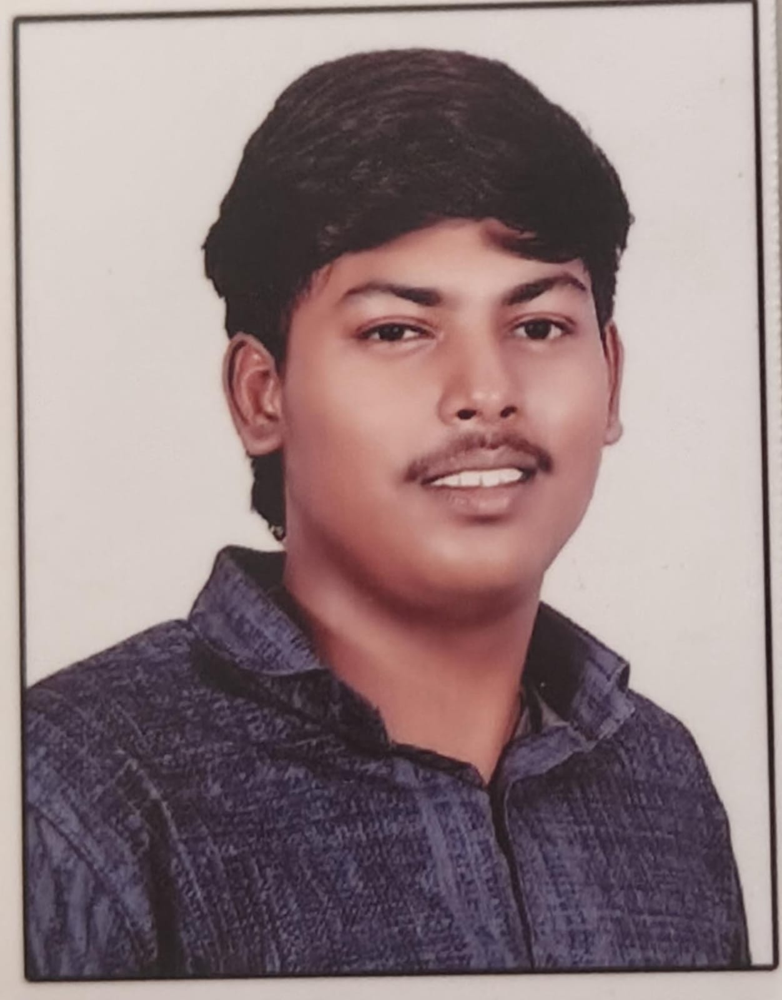

I am Aswin S, a BCA (CYS) student with a passion for technology and web development. I love learning new tools, solving problems, and working on creative projects. My goal is to grow as a cybersecurity and development professional while improving my technical and teamwork skills.
| Degree | Institution | Year | CGPA |
|---|---|---|---|
| 12th Grade | Nellai Nadar Metric Higher Secondary School, Kottivakkam, Chennai | 2022 | - |
| BCA (CYS) | Hindustan Institute of Technology and Science | 2025 | 7.5 |
A responsive website showcasing my skills, education, and projects.
View ProjectA basic project displaying student details using HTML tables and lists.
View ProjectEmail: aswinsakthivel13@gmail.com
Phone: +91-9042660183
Address: 27 MK Stalin Street, Ambedkar Puratchi Nagar, Perungudi, Chennai – 600096